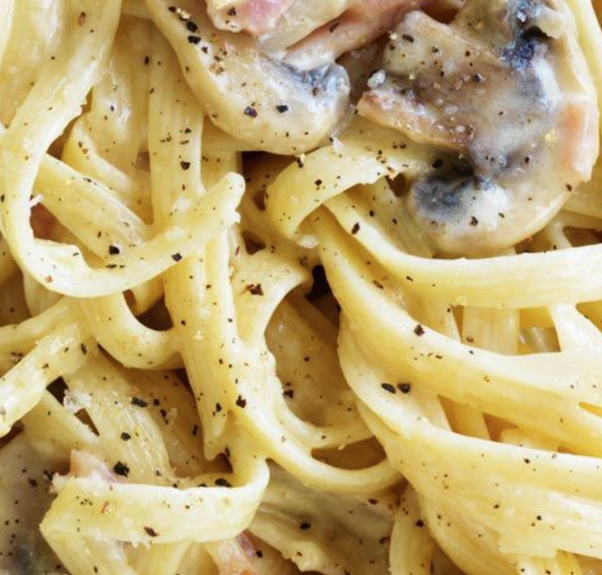

Creamy Bacon Pasta

With mushrooms.
The secret is in the butter and cream.
Ingredients
- 500 g linguine pasta
- 1 tablespoon olive oil
- 40 grams butter
- 1 large onion, finely chopped
- 250 grams bacon, shredded
- 200 grams mushrooms, sliced
- 3 dl pure cream
- 3 dl parmesan cheese
- black pepper and salt to taste
Steps
- Place bacon on a cold frypan and heat up to medium. Cook up until bacon starts to crisp. Add onion and mushrooms while stirring.
- Lower the heat down once mushrooms start to soften, and simmer occasionally.
- Cook the pasta according to package instructions. Once ready, drain well and toss olive oil into pasta.
- Add the butter and cream into frypan and mix. Add salt and black pepper.
- Add pasta into frypan. Mix everything together, add parmesan cheese and stir on low heat until the cream starts to thicken. Add more salt and pepper if needed. Enjoy!
Back to recipes!